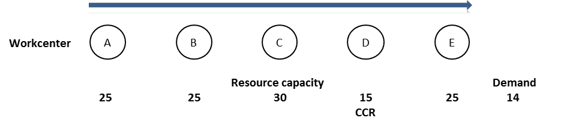

ресурс с ограниченной пропускной способностью (capacity-constrained resource, CCR) - Любой ресурс, который, если его мощность не управляется тщательно, может поставить под угрозу пропускную способность организации.
Иллюстрация: В примере, показанном ниже, производственная линия имеет пять ресурсов (от A до E) с указанными мощностями. Выход ресурса D подвержен достаточным колебаниям, так что, если им не управлять тщательно, объем производства упадет ниже уровня спроса и пропускная способность системы упадет; следовательно, «D» - это ресурс с ограниченной пропускной способностью.

Синоним: ресурс с ограниченными возможностями.
См .: ограничение, пропускная способность.
#производство
#ccpm
Примечание АВ: Есть коментарий Владимира Речкалова на сайте TOCPeople https://tocpeople.com/terminy/resurs-s-ogranichennoj-moshhnostyu-rom/
“
1. Ресурс «бутылочное горлышко» (bottleneck resource) — любой ресурс, чья мощность меньше либо равна потребности в этом ресурсе.
…
2. Ресурс с ограниченной мощностью (РОМ) (capacity constrained resource (CCR)) – любой ресурс, который (если его мощностями управлять некорректно), вероятно, негативно повлияет на проход организации.
…
Однако, бывают РОМ, которые не являются бутылочным горлышком. С одной стороны, у них в среднем есть некоторое время простоя, но иногда очередь на них столь велика, что некоторая часть потребности в нем теряется.
И ресурс бутылочное горлышко, и ресурс с ограниченной мощностью – это всегда ресурсы. И они могут быть ограничением. Т.е. тем, что в настоящее время задерживает поток товаров / услуг / ценности для клиентов и ограничивает проход. Но они не обязательно должны быть ограничением, потому что в системе может быть и другое бутылочное горлышко, загруженное еще сильнее.”
Примечание АВ: В один момент времени ресур-ограничение один
Примечание АВ: Ксть комментарий Е.Федурко-Коуэн https://tocpractice.com/ru/terminy-i-koncepcii-toc/2014/03/05/resurs-ne-ogranichenie-non-ccr/
Незагруженная мощность ресурса включает защитную мощность.
С точки зрения мощностей ресурсы разделяются на 3 типа:
Синоним: capacity-constrained resource